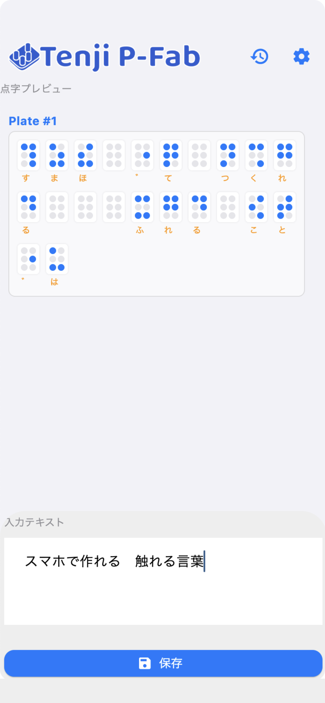

Words you can touch,
made on your phone.
Type Japanese text and Tenji P-Fab converts it to braille and creates data for 3D-printable braille plates. No special knowledge needed.

What it does
Japanese → braille
Morphological analysis finds the readings; word spacing, numbers and symbols follow the braille rules. You can correct a reading in the preview.
3D-printer data
Exports braille plates as OBJ and STL. Set characters per line, lines per plate, thickness and dot height.
One ZIP for everything
Your original text, braille data, a guide sheet and the 3D models are saved together in one ZIP.
Works offline
Everything is processed on your device. Your text is never sent anywhere.
How it works
- Type your textThe braille preview updates instantly.
- Tap “Save”A ZIP file is created. Use the share sheet to save it to Files or AirDrop it.
- Extract the ZIP and send the OBJ/STL to your 3D printerThe ZIP itself can’t be printed. See what’s inside the ZIP and how to take the files out.
To 3D-print: extract the saved ZIP, then open plate_01.obj (or plate_01.stl) in your slicer. → Step-by-step